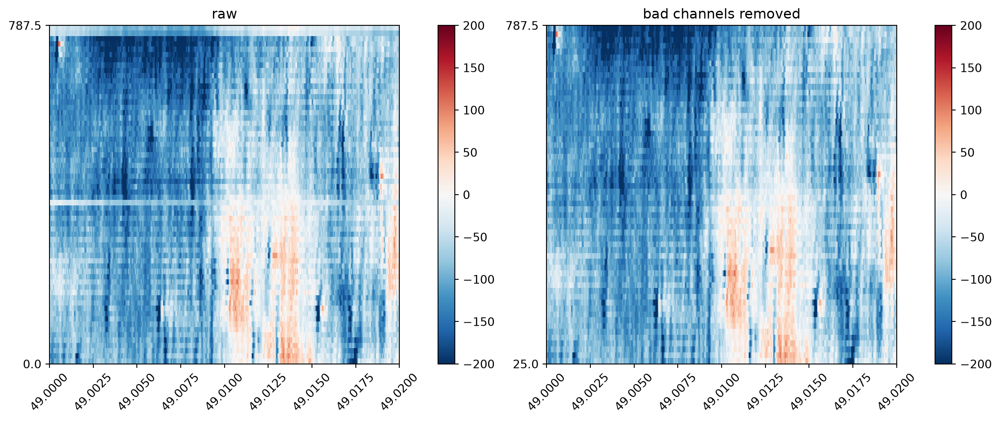

Bad-channel detection#
Overview#
This step detects ‘bad’ channels in the recording, such as broken dead or noisy channels or channels located outside of the brain. By default, the IBL’s bad channel detection algorithm is used.
Inclusion of bad channels can bias pipeline steps from preprocessing through to sorting, and so it is important they are dealt with early in the pipeline. Issues from including dead or noisy channels are particularly acute for operations performed across channels, such as common referencing or drift correction.
Bad channel detection must be performed after high-pass filtering, but before any common referencing or future steps. This is because band-pass filtering removes high-frequency signal used to determine whether a signal is noise.

A 64-channel Cambridge Neurotech recording containing dead and out-of-brain channels (left), and the same recording after bad-channel removal (right).#
Methods#
The IBL bad channel detection algorithm is recommended for high-channel count probes, and was developed for NeuroPixels probes (384 channels). For lower channel count probes, adjustments may need to be made to the default settings. Alternatively, other bad channel detection algorithms can be used:
std: detects noisy channels whose standard deviation exceeds a specified multiple of the median across channels.mad: applies the same criterion using median absolute deviation, making it less sensitive to extreme samples.
See SpikeInterface’s detect_bad_channels() function for details.
Removal and interpolation#
Bad channels can either be removed from the recording or interpolated from surrounding good channels. Interpolation preserves the probe’s spatial sampling grid, which is important for steps that assume a regularly sampled distance between channels (e.g. those filtering across channels, such as highpass spatial filtering). However, interpolated traces are estimates and so may distort waveforms. Further, contiguous blocks of bad channels provide less nearby information for estimating the missing signals, making interpolation less reliable. The safest option is to remove bad channels from your recording (unless performing spatial filtering steps).
Multiple sessions#
Bad channel removal must be handled carefully when combining multiple sessions, either through concatenation or when unit-matching. In this case, recordings for each session must contain the same set of channels. Therefore, in the multi-session case after bad channel detection of individual sessions the union of detected bas channels must removed from all individual recordings.
Inputs#
A raw recording from a single session from a single shank.
Outputs#
BAD_CHANNEL_DETECTION_OUTPUTS, containing channel IDs and labels.
Operations#
High-pass filter the data, as required by the detect-bad-channels method.
Detect bad channels and assign labels using the configured thresholds.
Save the channel IDs and labels to the bad-channel output directory.
Checks#
The IBL algorithm was developed for Neuropixels probes. A warning should be provided if attempting to use with other probes or those with low channel counts Alternative methods (e.g. std) might be more suitable for use with other probes.
No preprocessing should have been applied to the recording. This is the first step in the pipeline.
TODO: there is a known issue with the algorithm in which a large number of channels are labelled as ‘out’ when high frequency content in the recording is kept. The solution is to bandpass slightly the high frequencies. TODO: Ask Alessio Buccino for examples of this issue.
do not allow r2_nighoubrohod in this pipeline which is mostly for LFP recordings